Foundational Edition
Trading for the Slightly Confused.
A plain-English starter manual for stocks, ETFs, crypto spot, and listed futures.
Educational, regulatory, and legal disclaimer
Important educational, regulatory, and legal notice
This manual is an educational publication only. It is not individualized financial advice, investment advice, legal advice, tax advice, accounting advice, brokerage advice, commodities trading advice, or a solicitation or recommendation to buy, sell, hold, stake, borrow, lend, or otherwise transact in any instrument, security, commodity, futures contract, option, forex product, or digital asset.
Madeesh P. Nissanka is not presenting himself in this publication as a licensed financial advisor, investment adviser, broker, dealer, commodity trading advisor, accountant, tax professional, or attorney. Nothing in this manual creates an adviser-client, broker-customer, fiduciary, agency, partnership, joint venture, or professional-services relationship between the author and the reader.
This material reflects general educational views, commentary, and analytical frameworks prepared for learning purposes. It is not tailored to any person's objectives, finances, risk tolerance, legal status, tax position, or jurisdiction. Readers remain solely responsible for their own decisions, due diligence, suitability analysis, regulatory compliance, and use of any platform, broker, exchange, wallet, or service provider.
Examples, scenarios, figures, setups, and workflows in this guide are teaching examples. They may be simplified, hypothetical, incomplete, delayed, or unsuitable for real conditions. Real results can differ materially because of fees, spreads, slippage, financing charges, borrow costs, taxes, outages, execution delays, liquidity gaps, market structure shifts, platform failures, fraud, and human error. No promise, representation, or guarantee of profit, performance, recovery, or future result is made anywhere in this publication.
Past performance, hypothetical examples, paper-trading results, chart illustrations, pattern discussions, and theoretical frameworks do not guarantee future results. A pattern, ratio, indicator, or market thesis can fail immediately, fail repeatedly, or fail for reasons not visible in the chart alone.
Products, regulations, exchange rules, broker policies, and platform workflows can change without notice. Before acting on any operational detail in the public version of this manual, verify it against current official documentation from the relevant regulator, broker, exchange, clearing firm, wallet provider, or platform.
If this material is ever sold, bundled with paid access, paired with signals, used in direct messaging, used to answer individualized investment questions, or used in connection with compensation tied to securities or derivatives commentary, legal and regulatory review may still be required. A disclaimer by itself does not eliminate licensing, advertising, consumer-protection, or anti-fraud obligations that may apply under local law.
How To Use
Read it like a working manual
This edition is meant to be studied in sequence. The early chapters establish risk, market structure, accounts, and execution before later sections expand into patterns, planning, and review.
- Read the first three chapters before placing any live trade. Those chapters establish the risk, account, and execution framework that the later chart and setup chapters depend on.
- Use the chapter objectives to determine what should be understood before moving on. If a definition or workflow still feels vague, pause and write it down rather than pretending the gap does not exist.
- Treat the worksheets as operating tools. They are included to force the material into a repeatable process rather than leaving it at the level of interesting language.
- Re-check any factual claim that affects money, compliance, or platform workflow against current official sources before you publish or use the book publicly.
Operating Principles
The rules that should survive every market phase
These principles are the backbone of the manual. They are supposed to remain useful even when the setup, product, or market tone changes.
- Capital preservation comes before prediction.
- A trade without a defined invalidation point is not a plan.
- A small, well-documented loss is usually cheaper than an oversized lesson.
- If you cannot explain the product, the order type, or the risk in simple words, you are not ready to use size.
- No promised return is credible simply because the language sounds sophisticated.
Contents
Full chapter map
This web edition is synced to the full source book rather than the earlier short-form upload.
Start With Risk, Not Excitement
Trading becomes safer when the first question is what can go wrong.
Know the Market You Are Participating In
Different products carry different structure, hours, and risk mechanics.
Accounts, Brokers, and Safety Before the First Order
The cleanest trade plan in the world is useless if the account setup is reckless.
How Orders Actually Reach the Market
Execution mechanics matter because good ideas can still be expressed badly.
Reading a Chart Without Turning It Into Fortune Telling
A chart is an organized record of behavior, not a guarantee of the next move.
Build a Trade Plan Before You Need One
The trade plan should exist before the position starts arguing with you.
Position Sizing, Margin, and Survival
Most beginners do not fail because they never had a good idea; they fail because size outran skill.
Journaling, Review, and Fraud Defense
A trading practice matures when it can be reviewed honestly and defended operationally.
Chapter 1
Start With Risk, Not Excitement
Trading becomes safer when the first question is what can go wrong.
Objectives
- Separate saving, investing, and trading into different decision buckets.
- Understand why time horizon and risk tolerance should shape trade size and product choice.
- Define what beginner success should look like in the first ninety days.
Key terms
risk tolerance, time horizon, drawdown, liquidity, speculation, capital preservation
Saving, investing, and trading are different clocks
When I explain markets to someone new, one of the first mistakes I try to correct is using one word, 'investing,' for every money decision. In practice, saving, investing, and trading solve different problems. Savings is money kept primarily for safety and near-term access. Investing is usually tied to a longer time horizon and to exposure that can compound over time. Trading is a shorter-horizon activity that tries to exploit a repeatable edge in price movement.
When those buckets are mixed together, confusion follows. Rent money gets treated like trading capital. Long-term holdings are sold because of intraday noise. A short-term trade becomes a 'long-term investment' only because the trader refuses to close a losing position. The cleaner move is to decide in advance which dollars belong to which job.
This distinction matters even when the instrument looks the same. A share of a company can be part of a long-term investment plan, or it can be part of a short-term trading setup. The difference is not the ticker symbol. The difference is the holding period, the risk tolerance, the review process, and the reason the position was opened in the first place.
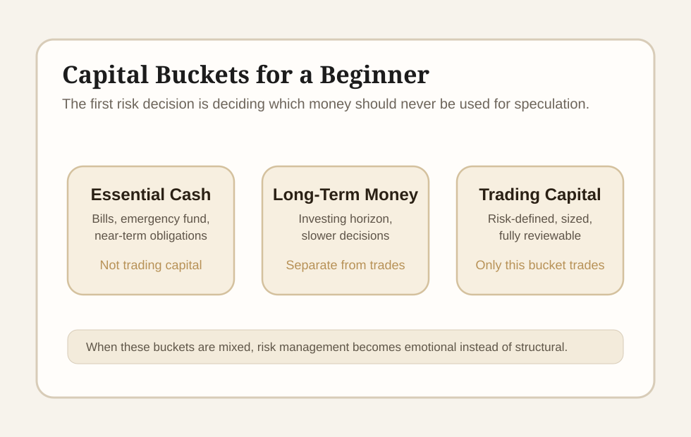
Separating capital by job is one of the fastest ways to reduce beginner confusion.
Working rule: If money has an important real-world job in the next few months, it should not be treated like speculative capital.
Risk tolerance is not bravado
Investor.gov frames risk tolerance as both the ability and willingness to lose some or all of an investment in exchange for greater potential returns. That wording matters because many beginners only focus on willingness. They imagine themselves as aggressive because the upside sounds exciting, but their actual financial position may not support large losses, or their emotions may change the moment the account turns red.
A practical definition is simpler: risk tolerance is the amount of uncertainty you can carry without needing to make irrational decisions. If a one percent move against you destroys your concentration, that is information. If a weekend gap or a sudden crypto move would make you panic, that is information too. The market does not reward the image you have of yourself. It only tests the account and the decision process you actually bring.
Time horizon belongs in the same conversation. Money needed within months should usually be treated differently from money that can stay at risk for years. A common beginner error is using short-term money to pursue long-term outcomes, or long-term capital to scratch a short-term trading itch. That mismatch creates forced decisions when patience would otherwise be possible.
- Separate emergency funds, living expenses, and speculative capital before thinking about setups.
- Assume that volatile products can move farther and faster than your first intuition suggests.
- Reduce size until the position can be managed rationally.
What beginner success should really mean
The first ninety days of trading should not be judged primarily by profit. That standard sounds strange because markets are about money, but it is the correct beginner standard. The first milestone is process stability: learning to build a plan, use the right order type, respect position size, keep records, and close trades when the plan fails.
A trader who makes money with random size, no records, and no defined exit can feel successful for a month and still be building a future blowup. By contrast, a trader who takes small losses, journals every trade, and proves that they can follow the same checklist repeatedly is creating something much more valuable: a base that can survive contact with real volatility.
Beginner success therefore looks like smaller size, clearer rules, and fewer avoidable mistakes. It looks like learning to remain flat when no setup is present. It looks like recognizing that not every instrument deserves attention and that no single day needs to carry the weight of the month.
Beginner scorecard: Judge the first stage by execution quality, record quality, emotional control, and consistency of sizing before you judge it by account growth.
A practical beginner routine could therefore look like this: trade smaller than you think is necessary, record every setup, review every mistake at the end of the week, and measure whether discipline held under pressure. That routine is not glamorous, but it is what turns scattered effort into a usable operating base.
Chapter checklist
- My trading capital is separated from money needed for bills or emergencies.
- I can explain the difference between saving, investing, and trading in plain language.
- I know what kind of loss would cause me to abandon my plan emotionally.
- I understand that early success means stable process, not just a green P&L.
Review questions
- Why is mixing living-expense money with speculative capital dangerous?
- How does time horizon change what kind of risk is acceptable?
- What would a healthy beginner scorecard measure besides profit and loss?
Common mistakes
- Using money with a near-term real-world job as speculative trading capital.
- Renaming a losing short-term trade a long-term investment after the fact.
- Measuring beginner progress only by profit and ignoring execution quality.
Scenario lab
A new trader receives fresh capital and wants to trade aggressively immediately because confidence is high and the market looks active. No capital buckets have been separated, no risk ceiling has been defined, and the trader is using motivation as a substitute for process.
- Which part of the capital should clearly stay outside speculative activity?
- What rule would reduce the chance of oversizing in the first month?
- What would count as success if the account balance were ignored for ninety days?
Verification checklist
- Keep public wording clear that losses are still possible even with discipline.
- Re-check any risk-tolerance and suitability references before publication.
- Avoid framing beginner caution as weakness; frame it as operating discipline.
Worksheet prompts
- Write down the three capital buckets you intend to keep separate.
- Describe your actual risk tolerance, not the one you wish you had.
- List the behaviors that would prove you are trading with process instead of impulse.
Primary sources
Chapter 2
Know the Market You Are Participating In
Different products carry different structure, hours, and risk mechanics.
Objectives
- Understand the operational differences between stocks, ETFs, crypto spot, and futures.
- Recognize how liquidity and trading session structure affect price behavior.
- Identify why market participants may be trading the same instrument for different reasons.
Key terms
session, liquidity, spread, volatility, ETF, futures contract
Four beginner product families
For a beginner, stocks, ETFs, crypto spot, and futures should not be treated as minor variations of the same thing. Stocks represent ownership in a company. ETFs package exposure to a basket or theme. Crypto spot usually represents direct exposure to a token or coin in cash markets that can trade all day, every day. Futures are standardized contracts whose behavior includes expiry, margin, and contract specifications that must be understood before live use.
That does not make one category inherently superior. It means the learning burden is different. An ETF can give broad exposure with less single-name event risk than an individual stock. Crypto spot can remain highly reactive outside traditional business hours. Futures can give efficient exposure but can also magnify gains and losses through margin. The product choice should reflect the trader's knowledge, time horizon, and ability to control size.
If you are new, I do not want you trying to master every market family at once. In fact, that is usually a mistake. The safer move is to pick one primary learning environment, understand its hours, typical volatility, fees, and order behavior, and only expand after a record of stable execution exists.
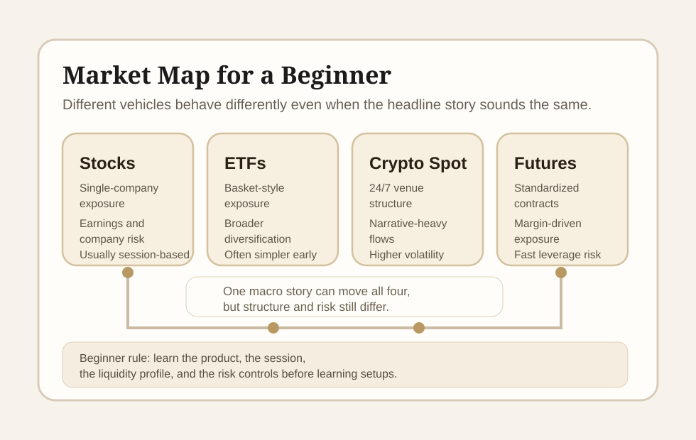
A beginner should think about market type before thinking about strategy.
Sessions, liquidity, and why the clock matters
Price does not behave the same way at all hours. Session-based instruments may show one type of behavior at the open, another during midday, and another near the close. Crypto spot may trade twenty-four hours a day, but not every hour carries the same depth or quality. The market can be technically open while still being operationally thin.
Liquidity is the ability to transact without badly distorting price. When liquidity is deep, spreads tend to be tighter and large orders are easier to absorb. When liquidity is thin, slippage can widen, price can jump between levels, and stop orders can behave more harshly than the beginner expects. That is why the same setup can behave cleanly in one instrument and chaotically in another.
A useful beginner habit is to label the environment before labeling the setup. Ask whether the instrument is currently active or thin, trend-driven or rotational, orderly or disorderly. That habit does not guarantee a good trade, but it prevents the trader from pretending that context is irrelevant.
This is where session study becomes practical. A beginner can spend a week simply observing how an instrument behaves at the open, in the middle of the session, during quiet periods, and near the close. Crypto traders can do the same by comparing active overlap periods with quiet overnight stretches or weekend conditions. That observation work is not wasted time. It is the raw material that keeps later execution expectations realistic.
- Know the main hours when your chosen market is most active.
- Observe average spread and the pace of movement before trading live.
- If the market feels hard to read because it is thin or erratic, staying flat is a valid decision.
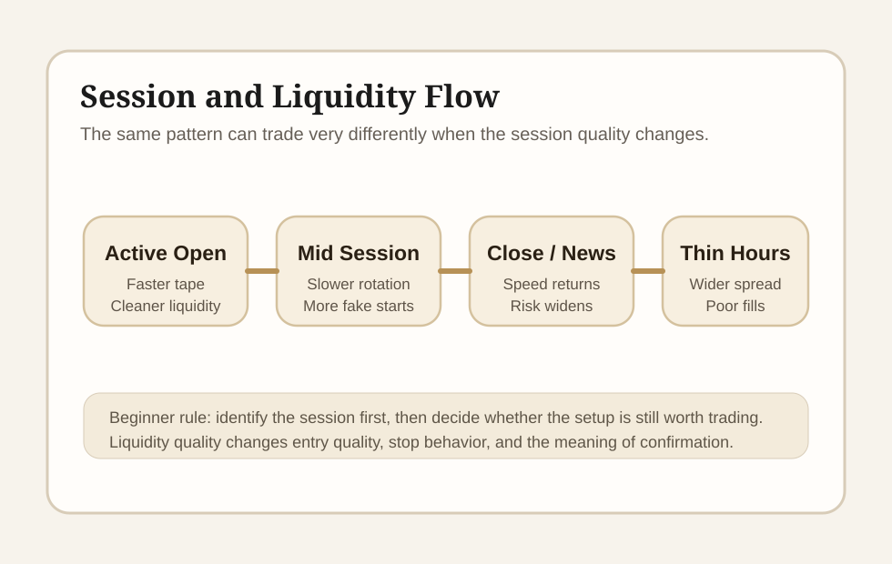
Session quality changes how cleanly the same setup can behave.
Different participants create different flows
Not everyone in the market is trying to do what a beginner trader is trying to do. Some participants are hedging. Some are rebalancing a portfolio. Some are responding to earnings, rates, or index changes. Some are market makers managing inventory. Some are systematic strategies reacting to the same conditions at scale. Others are simply speculating.
This matters because price can move for reasons that have nothing to do with the chart pattern a beginner is focused on. A clean intraday move may be linked to index flows, an options-related event, a macro headline, a funding imbalance in crypto, or a futures positioning story. The beginner does not need to identify every participant behind every move. The goal is simply to respect that price is an auction shaped by many motives, not a private conversation between your thesis and the chart.
That mindset lowers ego. A trade can fail without the market being irrational. It can simply reflect that larger flows or better-informed participants were operating in a way the small trader did not yet understand. Accepting that reality is part of becoming less fragile.
Observation standard: If you cannot describe who might be active in the market and why liquidity might be changing, your chart reading is missing context.
Crypto market structure for beginners
Crypto deserves special handling because its market structure can feel familiar on the surface while behaving differently underneath. The market trades around the clock, liquidity quality changes by venue and by time of day, and narratives can create sudden one-sided flows. A beginner should therefore avoid assuming that a clean chart automatically means stable conditions.
Another practical difference is that crypto traders often talk about funding, liquidations, and aggressive positioning. Even if a beginner is trading spot and not leveraged derivatives, these forces can still influence price action because heavily positioned participants can be forced to exit quickly. That can create sharp moves that feel disconnected from ordinary chart expectations.
The useful beginner takeaway is modest. Learn the difference between spot exposure and leveraged exposure. Respect that twenty-four-hour trading does not mean every hour is equally trustworthy. Assume that fast narrative-driven assets need smaller size, better patience, and cleaner verification than slower markets.
Venue structure also matters more in crypto than many beginners expect. Liquidity can be fragmented across exchanges, fees can vary, and the route between exchange balances, stablecoins, and self-custody wallets can introduce operational friction. Even a trader who only wants simple spot exposure should understand that transfers, outages, and wallet-confirmation delays can affect when capital is actually available.
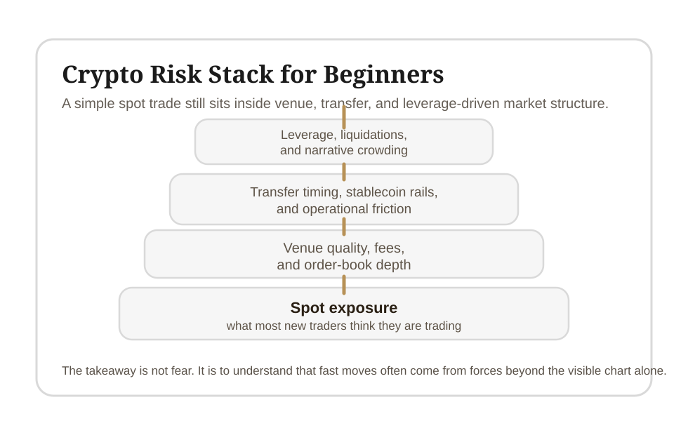
Even spot traders sit inside a broader crypto structure shaped by leverage, venue quality, and transfer friction.
Chapter checklist
- I know which product family I am prioritizing first and why.
- I know the main session characteristics of the market I want to trade.
- I understand that low liquidity can make a valid idea execute badly.
- I recognize that price can move because of participants with goals very different from mine.
Review questions
- How do stocks, ETFs, crypto spot, and futures differ operationally?
- Why can the same setup behave differently at different hours?
- Why does understanding participant motive reduce overconfidence?
Common mistakes
- Trying to learn several market families at once without a primary learning environment.
- Assuming a market being open automatically means it is liquid enough for the plan.
- Reading every move as if all participants share the same motive.
Scenario lab
A trader sees a setup during a thin period and assumes it should behave like the same setup seen during an active session. The spread is wider, the order book is shallower, and the move is being driven by a different participant mix.
- Which environmental checks should happen before entry?
- How could the same pattern behave differently because of liquidity alone?
- What would justify smaller size or no trade at all?
Verification checklist
- Re-check product hours and contract details before publishing examples.
- Keep market-family comparisons operational rather than promotional.
- Do not imply that session labels guarantee future liquidity quality.
Worksheet prompts
- Write down the single market you will study first and the hours you care about most.
- List three signs that liquidity is healthy and three signs that it is poor.
- Describe one example of a participant motive other than pure speculation.
Primary sources
Chapter 3
Accounts, Brokers, and Safety Before the First Order
The cleanest trade plan in the world is useless if the account setup is reckless.
Objectives
- Understand the difference between cash and margin accounts.
- Learn how to perform basic broker and platform due diligence.
- Build a baseline account-security checklist before funding an account.
Key terms
cash account, margin account, maintenance margin, two-factor authentication, registration, custody risk
Cash accounts and margin accounts
Investor.gov distinguishes between cash accounts and margin accounts for securities trading. In a cash account, the investor pays the full amount for securities purchased and is not borrowing from the broker to finance the transaction. In a margin account, the brokerage firm can lend money to the customer, with the securities acting as collateral for the loan.
That difference changes the risk profile immediately. Borrowed money can increase flexibility, but it also introduces financing costs, margin calls, and the possibility that the firm may liquidate securities to cover a deficiency. The beginner who opens a margin account for convenience without understanding those mechanics has already increased complexity before the first trade idea is even evaluated.
For many beginners, a simpler progression is safer: learn execution and position discipline in the cleanest account structure available. Complexity should be earned, not assumed. Borrowing power is not the same thing as readiness.
Margin reality: Borrowed buying power can increase exposure faster than skill increases. That gap is where many preventable account injuries happen.
Broker due diligence is part of risk management
I want you to think of a trading account as more than a charting venue. It is a legal and operational relationship. Fees, routing quality, available order types, margin policies, product access, customer protections, and platform stability all matter. You should know what products are actually being traded, who the regulated entity is, what the account agreement says, and how the firm handles outages, liquidation, and support.
FINRA's BrokerCheck is a useful starting point for researching the background of investment professionals and brokerage firms dealing with securities. In derivatives markets, the CFTC advises the public to verify registration with the CFTC and NFA before working with a person or firm. Registration alone does not remove fraud risk, but it is still a meaningful basic filter.
The proper mindset is slow and administrative. Before funds are sent, verify the firm name, the legal entity, the website domain, the support contacts, the fee schedule, and whether the product being promoted matches the entity's actual permissions. The more urgent and theatrical the sales language, the slower the due diligence should become.
- Verify the exact legal name of the firm, not just the brand name used in advertisements.
- Review fee schedules, inactivity fees, borrow fees, financing, or funding charges where relevant.
- Read the platform's liquidation and risk-disclosure documents before using leverage.
- Do not treat social media popularity as proof of legitimacy.
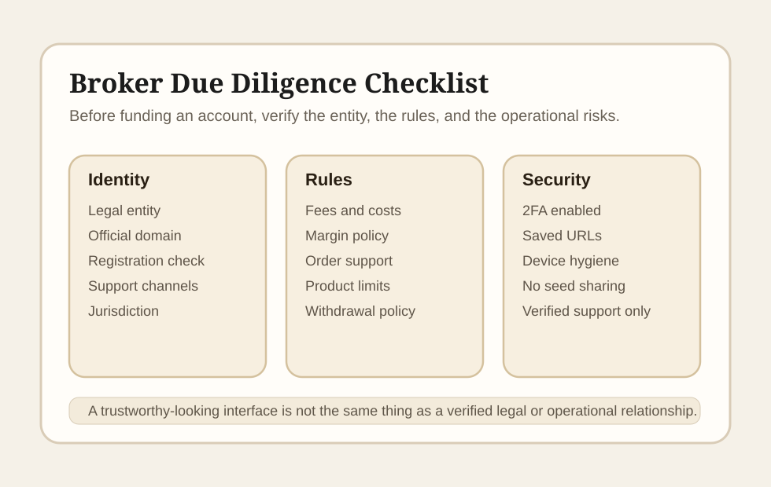
Account funding should follow an entity, rules, and security checklist.
Security and operational hygiene
Many beginner losses do not come from market analysis at all. They come from poor operational hygiene: weak passwords, no two-factor authentication, clicking the wrong link, trusting fake customer support, or sending funds to the wrong address. That is particularly important in crypto, where irreversible transfers and fraudulent interfaces are common enough to deserve their own discipline.
A basic defensive stack is straightforward: strong unique passwords, an authenticator-based second factor, device updates, careful bookmarking of official websites, withdrawal controls where available, and skepticism toward unsolicited contact. If a message contains urgency, demands secrecy, or requests wallet credentials, it should be treated as hostile until proven otherwise.
Operational safety is not separate from trading. It is part of trading. A person who spends hours learning chart patterns while ignoring account hygiene is protecting the wrong layer of the workflow.
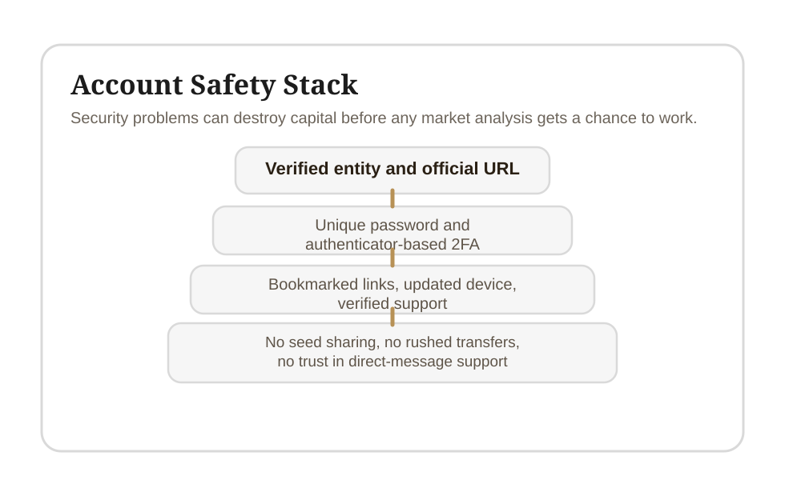
Account protection should be treated as part of execution discipline, not as a separate hobby.
Minimum security stack: Unique password, authenticator app, bookmarked official URLs, no seed phrase sharing, and direct verification of support channels.
Chapter checklist
- I know whether I am using a cash account or a margin account and why.
- I have checked the firm or professional through an official database where applicable.
- I understand the main fees and liquidation rules tied to my chosen account.
- I have basic account-security controls turned on before funding the account.
Review questions
- How does a margin account change risk compared with a cash account?
- Why is registration verification a useful but incomplete safeguard?
- Which operational mistakes can destroy capital without any market analysis error?
Common mistakes
- Opening a margin-enabled account without understanding margin and liquidation rules.
- Trusting a platform because it looks polished instead of because it is verified.
- Treating account security as a separate topic from trading discipline.
Scenario lab
A beginner finds a platform through social media and wants to fund it quickly. The interface looks premium, the fees sound low, and support responds fast in direct messages, but the legal entity, registration status, and liquidation rules have not been checked.
- What should be verified before any transfer happens?
- Which official databases or documents should be checked first?
- What parts of the pitch are style and what parts are proof?
Verification checklist
- Re-check entity and registration links before public release.
- Do not present registration as a guarantee against loss or misconduct.
- Update security guidance if authentication or support workflows change.
Worksheet prompts
- List the exact firm, entity, and support channels you intend to trust.
- Write down the security controls you have already enabled and the ones still missing.
- Describe in one paragraph why leverage should be earned rather than assumed.
Primary sources
Chapter 4
How Orders Actually Reach the Market
Execution mechanics matter because good ideas can still be expressed badly.
Objectives
- Understand bid, ask, spread, and why last price can be misleading.
- Use market, limit, and stop orders in the right context.
- Recognize slippage, partial fills, and verification controls in exchange-traded markets.
Key terms
bid, ask, spread, market order, limit order, stop order, slippage
Bid, ask, and the difference between seeing a price and getting a fill
If you are new, one trap I want you to avoid is watching the last-traded price as if it were the only price that matters. In reality, what matters for execution is the price available when the order reaches the market. A buyer must usually interact with the ask. A seller must usually interact with the bid. The difference between those levels is the spread.
When a market is active and liquid, spreads can be narrow and the difference may feel small. In a thin market or fast condition, the spread can widen, price levels can move quickly, and a trader who thinks they are buying at one number can discover that the actual fill occurs somewhere less attractive. That difference is not necessarily fraud or manipulation. It is often just the practical cost of trading in a live market.
This is why screenshots after the fact are not enough. The trader must understand the quote, not only the chart. A setup can look perfect on a delayed or simplified screen and still execute poorly if the order meets bad liquidity.
A useful way to think about spread and slippage is as a hidden execution tax. The market may not charge it in a dramatic headline, but the account still pays it through a worse entry, a worse exit, or both. Once beginners start thinking in those terms, they become more selective about which products and conditions deserve market orders and which ones require more patience.
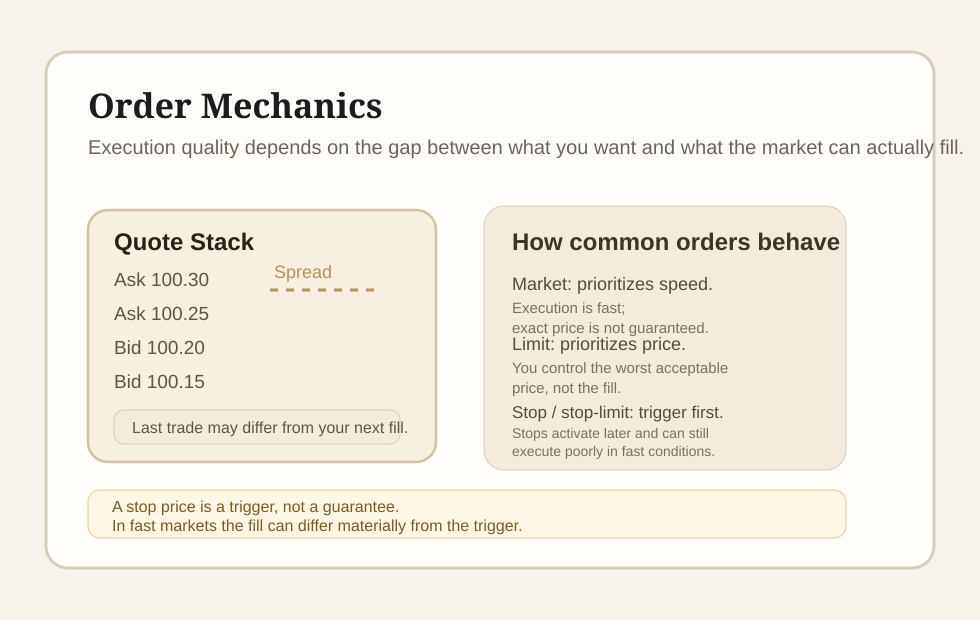
Quotes, spreads, and order types should be understood before live execution.
The basic order types every beginner should master
Investor.gov describes the three standard beginner order types clearly: market, limit, and stop. A market order aims to execute immediately, but it does not guarantee the exact execution price. A limit order defines the worst acceptable price for the trader, but it does not guarantee a fill. A stop order becomes active when price reaches a specified level and then behaves like a market order.
The practical lesson is not merely to memorize definitions. It is to match the order type to the actual purpose. If speed matters more than a perfect price, a market order may be appropriate. If price discipline matters more than speed, a limit order may be better. If the goal is to define where the trade idea is invalid, stop logic becomes part of the risk plan.
Beginners often misuse stops because they think of them as emotional comfort rather than structural invalidation. The healthier use is to place the stop where the original idea no longer makes sense, not where the loss simply feels unpleasant.
There is also a practical difference between understanding an order type conceptually and knowing how your platform implements it. Some platforms make stop and stop-limit behavior easy to review before submission, while others hide details behind small interface choices. A beginner should therefore rehearse order entry in a simulator or with the smallest practical size before assuming that a textbook definition guarantees clean execution on a real platform.
- Use market orders when you understand the liquidity conditions and the need for immediate execution is real.
- Use limit orders when the price itself is part of the trade thesis.
- Use stop logic to define failure before the position becomes emotional.
What happens after you click submit
CME Group's educational material is useful here because it makes visible what beginners usually ignore. The order first passes through broker-level verification to confirm things like account restrictions, contract selection, and sufficient margin. It can then face exchange-level controls before becoming a working order in the market.
That means order flow is not magic. There are checks, price protections, and matching processes behind the scenes. In futures, for example, contract size, expiry, and margin all matter before the order is accepted. Those details do not just belong to 'advanced traders.' They belong to anyone who touches the product.
Operationally, this should humble the beginner. The act of clicking is the smallest part of the process. Good trading behavior includes understanding the route from plan to order to fill to position management, not just the moment of entry.
That route is especially important in volatile crypto and derivatives products because the account can move from idea to exposure to stress very quickly. If the trader has never asked what protections, rejection messages, margin rules, or partial-fill conditions exist on the platform, then the workflow is incomplete. The correct beginner habit is to learn the pathway before trusting speed.
Execution warning: A stop price or trigger price is not a guaranteed fill price, especially when markets move fast or liquidity disappears.
Execution in volatile crypto and fast markets
Crypto execution deserves its own beginner warning because speed, fragmentation, and social-media-driven momentum can compress decision time badly. A move can look clean on the chart while the live order book is thinning, spreads are widening, or the push is being driven by liquidations rather than by orderly demand. That does not mean crypto is untradable. It means the beginner has to be slower than the crowd, not faster.
One workable beginner routine is to reduce the number of variables before every order. Confirm the venue, the pair, the fee impact, the side of the book you will need to hit, the invalidation level, and what you will do if the first move is a false start. If those answers are missing, the market is asking for discretion while the trader is arriving with impulse.
Execution quality in fast markets is often improved by smaller size and better pre-commitment rather than by faster reactions. The beginner should not try to out-click the market. The better objective is to place fewer, clearer orders in conditions that can actually be managed.
Chapter checklist
- I know the difference between the last-traded price and the live bid/ask.
- I can explain when a market order is useful and when it becomes careless.
- I know that stop orders can fill worse than the trigger price in fast conditions.
- I understand that broker and exchange checks can affect order acceptance.
Review questions
- Why can a market order fill at a worse price than the chart suggests?
- What trade purpose fits each of the main order types?
- What happens between the moment an order is sent and the moment it becomes active?
Common mistakes
- Using a market order simply because it is the fastest button to press.
- Ignoring spread and quote quality because the chart image looks clean.
- Treating a stop trigger as a guaranteed fill price.
Scenario lab
A trader chases a fast breakout with a market order in a thin market and then feels cheated because the fill is worse than the displayed last price. The chart still looks valid, but execution quality changed the trade before management even began.
- Which quote details should have been checked first?
- How might a limit order have changed the trade-off?
- What execution lesson matters even if the trade later works?
Verification checklist
- Re-check order-type language against official broker or exchange pages before publication.
- Keep fill-risk language precise and non-promissory.
- Describe stop behavior as trigger-plus-execution logic, not certainty.
Worksheet prompts
- Describe a situation where a limit order is safer than a market order.
- Write a plain-language definition of slippage.
- List the information you would verify before entering a futures order.
Primary sources
Chapter 5
Reading a Chart Without Turning It Into Fortune Telling
A chart is an organized record of behavior, not a guarantee of the next move.
Objectives
- Use candles, swings, and zones to describe structure in simple language.
- Recognize the difference between trend, range, and disorder.
- Add context through time frame alignment and market conditions.
Key terms
candle, range, trend, support, resistance, time frame, confirmation
Candle anatomy and swing structure
Candles compress a great deal of information into a small visual space: open, high, low, and close for a selected time period. The body shows where price opened and closed. The wicks show where price traveled but did not hold. On their own, candles are not predictions. They become useful when they are placed in sequence and compared with nearby structure.
If you are learning chart reading, I want you to focus first on swing logic. Is the market printing higher highs and higher lows, lower highs and lower lows, or neither? Are swings becoming orderly or chaotic? Is the market respecting a zone repeatedly, or simply slicing through it? This language is less glamorous than memorizing candlestick names, but it is much more useful.
One strong habit is to write down the structure before writing down the opinion. If the trader cannot explain the current structure without prediction words, the analysis is probably too vague.
This matters because chart reading is mostly the art of describing what the market is doing before deciding what it might do next. A beginner who becomes comfortable with simple structural language gains a more stable base than a beginner who memorizes pattern names without understanding where buyers and sellers actually proved or failed their case.
The practical method is repetitive and deliberately plain. Mark the latest swing high, the latest swing low, and the zone where price most recently accepted value. Then ask what would need to happen for that description to change. That habit sounds basic, but it converts a chart from decoration into a decision tool.
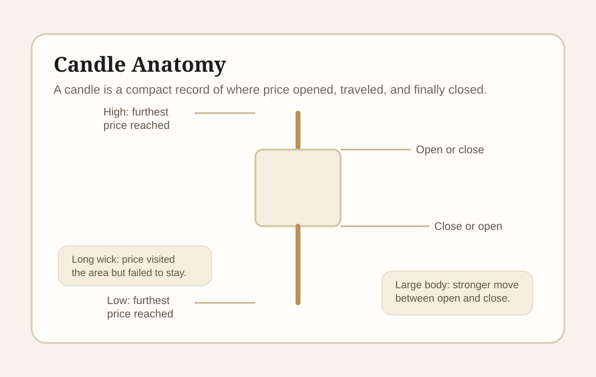
Candles become useful when the trader understands what each part of the candle implies about control and rejection.
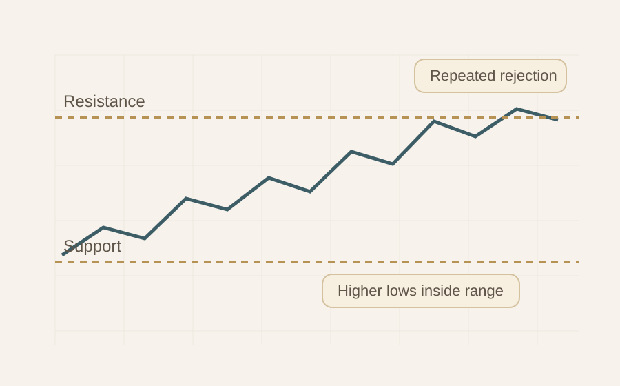
Repeated interaction around a zone often matters more than any single candle.
Trend, range, and when the market is simply messy
Not every market is trending. Some are rotating between clearly defined zones. Others are transitioning. Some are simply messy enough that the best description is 'unclear.' The ability to use that last description honestly protects beginners from forcing trades into artificial categories.
In a trend, pullbacks and continuations matter. In a range, rejection and acceptance around boundaries matter. In a disorderly environment, the priority may shift from entry quality to capital protection. The beginner who can identify the wrong environment for their strategy already has an edge over the beginner who trades every environment as if it were the same.
This is also where humility matters. A trader can be correct about a higher-time-frame direction and still lose repeatedly if they force entries inside a messy lower-time-frame environment. Context does not remove risk, but it changes where the risk is coming from.
Another useful beginner shift is to think in zones instead of exact magic prices. Support and resistance are rarely perfect laser lines. They are areas where acceptance or rejection has to be judged with some tolerance. When a beginner expects surgical precision from every level, normal market noise starts to look like betrayal rather than just price discovery.
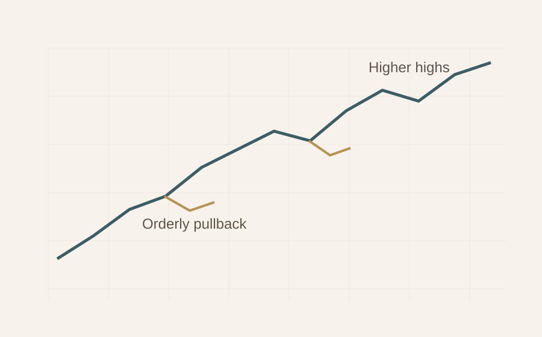
Orderly trends usually give some form of pullback or pause before continuation.
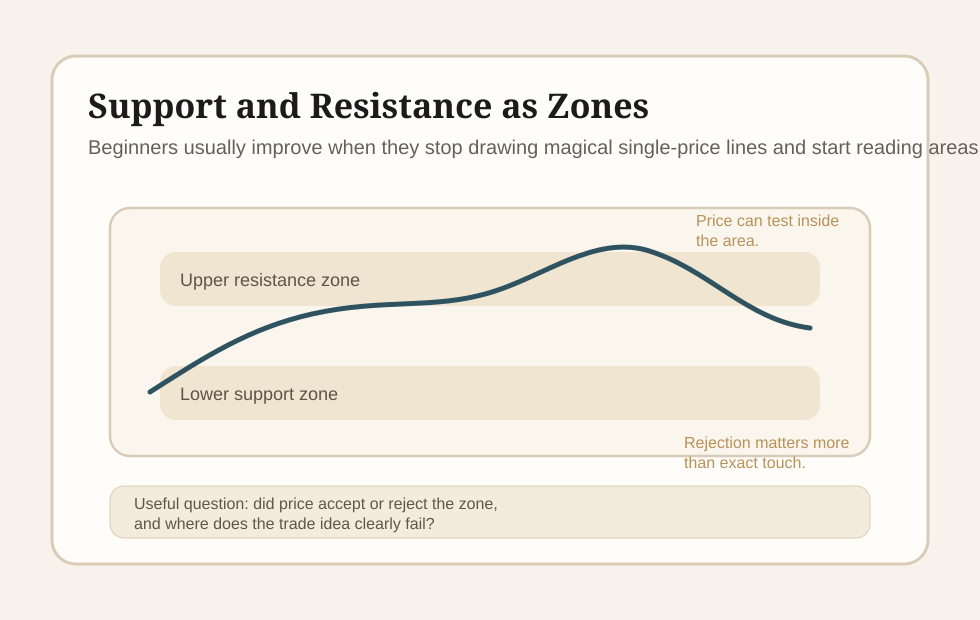
Important levels usually behave more like zones of acceptance and rejection than like perfect single-price lines.
Multiple time frames and real-world context
A five-minute chart, a one-hour chart, and a daily chart can all be describing the same instrument truthfully while telling very different stories. The beginner does not need a complex screen full of time frames. Two or three well-chosen views are often enough: a broader context frame, an operating frame, and possibly a more detailed frame for execution.
The point of multiple time frame work is not to find mystical confirmation. It is to avoid losing the larger picture while managing smaller detail. A minor pullback on a short chart may be irrelevant inside a strong higher-time-frame trend, while a small breakout on a short chart may be meaningless if the larger market is pressing into a major resistance zone.
Real-world context still matters. Earnings, macro releases, central-bank decisions, and major crypto headlines can overwhelm otherwise clean-looking technical structure. Charts should therefore be read in conversation with the calendar and the product's event risk, not in isolation from it.
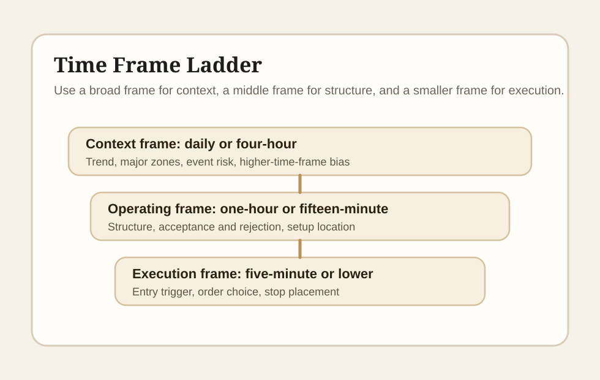
Use a broad frame for context, a middle frame for structure, and a small frame for execution.
Chart-reading discipline: A chart becomes more useful when it answers: What is the environment, what is the level, and what would disprove the reading?
Breakouts, failed breakouts, and why confirmation matters
Beginners are often drawn to breakouts because they look decisive. Price reaches a visible level, expands through it, and the move feels obvious. The problem is that a breakout is only useful if the market can accept the new area rather than simply visiting it. Many ugly losses come from buying the first print above a level without waiting to see whether the move can hold.
Confirmation does not need to be mystical. It can be as simple as evidence that price is staying above the level, volume or participation is supportive, and the invalidation point is close enough to define cleanly. The goal is not to remove all false breaks. The goal is to stop pretending that every first push through a line deserves full conviction.
This is particularly important in crypto and high-beta names where a fast move can be driven by short covering, liquidation pressure, or thin order-book conditions rather than by durable acceptance. Waiting for the move to prove itself can feel slower, but it often turns a reckless entry into a manageable one.
A beginner should also learn to distinguish between a breakout that expands from a prepared structure and one that appears after several extended candles are already gone. The later the entry, the less control exists over invalidation distance and the more temptation there is to widen the stop emotionally. Good breakout behavior is not just about speed. It is about whether the trader can still define the trade cleanly.
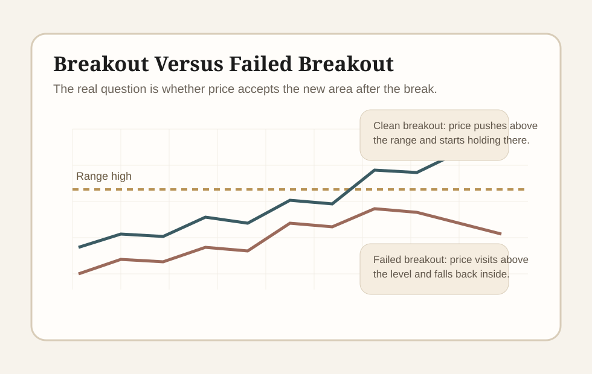
The important question is not whether price touched a level, but whether the market accepted it after the break.
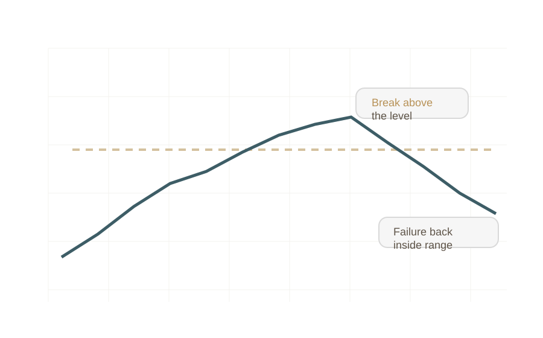
Failed breakouts matter because the market can reject the new area as quickly as it first entered it.
Fibonacci retracement and extension theory
Fibonacci tools are popular because traders use them to organize pullback depth and projected extension areas with a common visual language. The beginner should treat them as measurement aids, not as magic prices. A retracement level only matters if it overlaps with market structure, reaction history, or a clear plan for invalidation.
The most common beginner mistake is drawing Fibonacci from arbitrary swing points and then granting importance to every line equally. A cleaner approach is to start with an obvious swing, then ask whether a retracement level lines up with a real structural area that the chart has already respected. Extensions are used similarly: they are rough projection tools, not promises.
Used well, Fibonacci can help a trader discuss pullback depth, likely reaction areas, and target zones in a more disciplined way. Used badly, it becomes a screen full of lines that replaces clarity with decoration. The correct beginner attitude is to keep the tool secondary to actual price behavior.
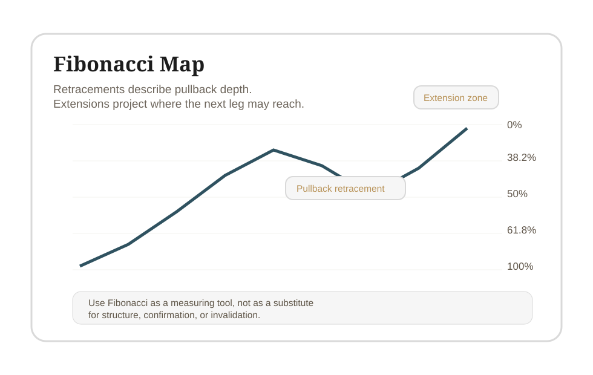
Retracement and extension tools are most useful when they are anchored to an obvious swing and combined with structure.
Classic patterns: triangles, ranges, and measured moves
Many classic chart patterns are simply repeated ways of describing compression and expansion. Triangles suggest price is narrowing toward a decision point. Ranges suggest repeated rejection and acceptance between boundaries. Measured-move logic suggests that one impulse can sometimes be followed by a comparable second leg after a pause.
A beginner does not need to memorize dozens of names to benefit from this material. The practical question is always the same: what is compressing, where is the boundary, what would confirm a break, and where is the clean invalidation point if the pattern fails? Pattern names matter less than understanding the logic underneath them.
Triangles are especially useful for beginners because they teach patience. The strongest part of the pattern is usually not the drawing itself. It is the recognition that price is becoming more compressed and that forcing an entry before the boundary resolves often means paying for noise instead of paying for information.
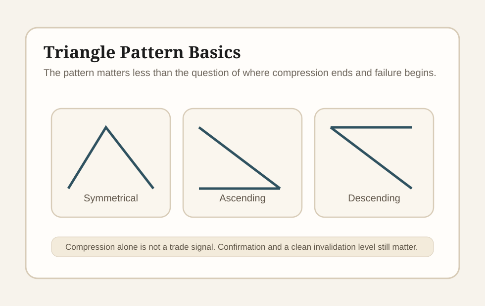
A pattern is only useful if the trader knows where confirmation ends and failure begins.
ABCD, XABCD, and the idea behind harmonic patterns
Harmonic patterns such as ABCD and XABCD try to describe price movement through proportional swings rather than through shape alone. In simple terms, the trader is asking whether the next leg of the move is developing with a relationship to the previous one that appears orderly and measurable. That is why these patterns are often discussed alongside Fibonacci ratios.
The beginner should keep two warnings in mind. First, harmonic language can become overcomplicated very quickly. Second, the pattern is not useful simply because the letters fit. What matters is whether the resulting zone is clear enough to trade with defined risk. If the pattern needs constant reinterpretation after the move has already happened, it is not helping the decision process.
The correct beginner takeaway is modest: ABCD and XABCD patterns are structured ways to think about symmetry, retracement, and exhaustion areas. They may help organize a chart, but they should still be tested against ordinary structure, liquidity, and invalidation discipline.
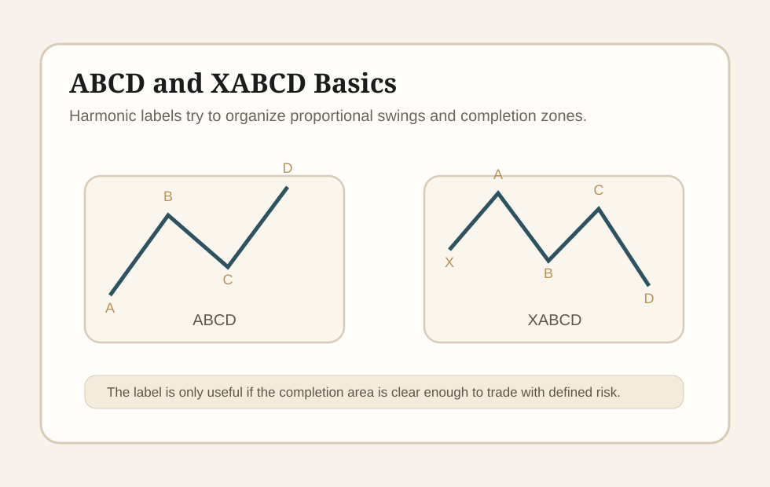
Harmonic labels are only useful when the completion zone can be managed with real risk limits.
Three drives, Elliott wave, and broader theory frameworks
Some theories aim to describe market movement at a broader structural level rather than only at the setup level. Three Drives theory looks for three measured pushes into exhaustion. Elliott Wave theory tries to describe market progress through impulse and corrective sequences. Traders use these frameworks to create a larger map of where the market may be inside a broader cycle.
These theories can be useful as organizing frameworks, but they are also dangerous for beginners because they invite overinterpretation. A chart can always be relabeled after the fact. That means the framework only becomes valuable if it improves risk definition before the trade is taken. If it only makes the analyst sound smarter after the move, it is not doing real work.
For a beginner, the safest way to use these theories is lightly. Let them provide context, not certainty. If the wave count or three-drives interpretation conflicts with the actual structure, liquidity, or invalidation point, the concrete evidence on the chart should win.
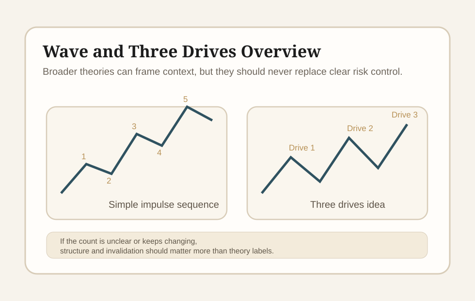
Broader theories can help frame context, but they should never replace actual structure and risk control.
Flags, pennants, channels, and continuation logic
Another family of common patterns tries to answer a simpler question: is the market pausing inside a move, or is the move actually ending? Flags, pennants, and channels are continuation-style ideas. They suggest the market may be digesting a prior impulse before deciding whether to continue.
I treat these as context tools rather than prediction tools. A bullish flag drawn inside weak volume, poor liquidity, or just beneath a major resistance area is not automatically bullish in any useful real-world sense. The same is true on the downside. Continuation patterns are most useful when they line up with broader structure, healthy participation, and a clean invalidation point.
For a beginner, the key lesson is that a pause is not the same thing as strength. The chart still has to prove that the market is accepting higher or lower prices after the pause. That proof matters more than the shape name.
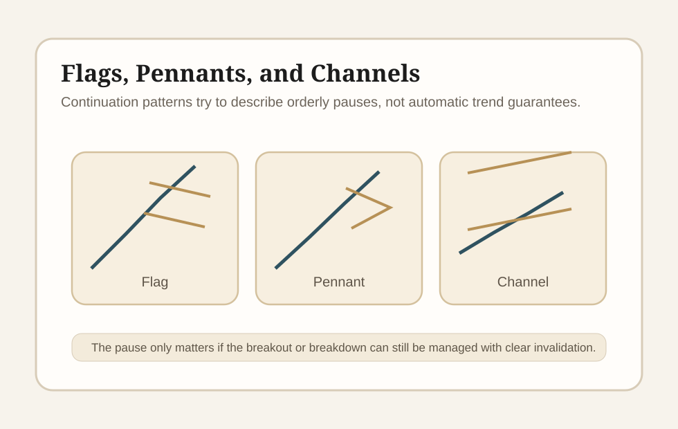
Continuation patterns are easier to trust when the pause is orderly and the invalidation point is still close.
Double tops, double bottoms, wedges, and reversal ideas
Reversal-style patterns try to frame the possibility that a prior move is losing control. Double tops and double bottoms focus on repeated tests of a zone. Wedges focus on a trend that is still moving but doing so with less clean momentum. Head-and-shoulders-style logic tries to describe a sequence in which trend structure weakens before a clearer reversal attempt appears.
These patterns are useful only when the trader stays honest about confirmation. A double top is not complete because two highs look similar. A wedge is not tradable because trendlines can be drawn around it. The pattern earns attention only when price reacts at a meaningful area and the invalidation point remains clear enough to manage.
What I want you to avoid is labeling every pause as a reversal. Reversal patterns matter because they can help frame exhaustion, but they still need the same discipline as every other chart idea: location, liquidity, confirmation, and risk control.
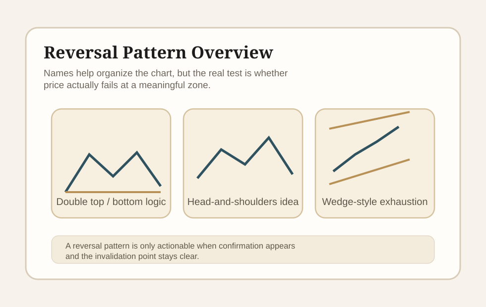
Reversal patterns matter less for their names and more for whether the market actually fails at a meaningful zone.
Chapter checklist
- I can describe structure in plain language before predicting direction.
- I know whether the market is trending, ranging, or too disorderly for me.
- I use more than one time frame to reduce tunnel vision.
- I check for major scheduled events before trusting a technical setup.
Review questions
- Why are candles more useful in sequence than in isolation?
- How would you distinguish a range from a trend in simple terms?
- What is the practical purpose of using multiple time frames?
Common mistakes
- Treating a named candlestick pattern as if it overrides context.
- Forcing a trend label onto a market that is actually rotating or messy.
- Using the smallest chart as if it were the whole market.
Scenario lab
A trader loves a lower-time-frame breakout, but the larger chart is pressing into a major resistance zone ahead of a scheduled event. The execution frame looks strong while the broader context is weak.
- Which higher-time-frame facts should have been reviewed first?
- How does scheduled event risk alter the meaning of a clean pattern?
- What would a more balanced routine look like before entry?
Verification checklist
- Keep chart-reading sections educational, not predictive or promotional.
- If new indicators are added later, explain them clearly and test whether they improve clarity.
- Re-check market calendar examples before publication.
Worksheet prompts
- Take one chart and describe its structure without using the words bullish or bearish.
- Write down one higher-time-frame level and one execution-time-frame level for the same instrument.
- List two situations where event risk can override a chart pattern.
Primary sources
Chapter 6
Build a Trade Plan Before You Need One
The trade plan should exist before the position starts arguing with you.
Objectives
- Define the difference between context, trigger, invalidation, and target.
- Use simple beginner playbooks instead of improvising every entry.
- Know when standing aside is the best trade decision available.
Key terms
thesis, trigger, invalidation, target, risk-reward, breakout, pullback
The four pieces of a basic trade plan
I do not think a beginner trade plan needs to be ornate. It does need to be complete. The first layer is context: why this instrument, in this environment, at this time? The second layer is the trigger: what has to happen for the trade to become active? The third is invalidation: what price behavior would show that the idea is wrong or early? The fourth is the target or exit framework: where will profits be taken, reduced, or reassessed?
When one of those layers is missing, the plan becomes a story rather than a decision model. Many poor trades come from a trader having a context and an opinion but no trigger. Others have a trigger but no clear invalidation, which means the stop becomes emotional rather than structural. Still others have no exit logic at all and therefore turn every open profit into a fresh decision under pressure.
A written plan forces clarity. It turns 'I think this looks strong' into something testable: 'If price reclaims this zone and holds above it, the trade becomes valid. If it loses this level, the idea is wrong for now.' That is the kind of language a beginner should learn to trust.
The plan should also define what happens if the market only partly cooperates. Many avoidable mistakes come from a trader having an entry idea but no plan for hesitation, partial profit-taking, or a setup that works slowly instead of explosively. A simple decision tree written in advance is usually more valuable than a more complicated thesis written after the fact.
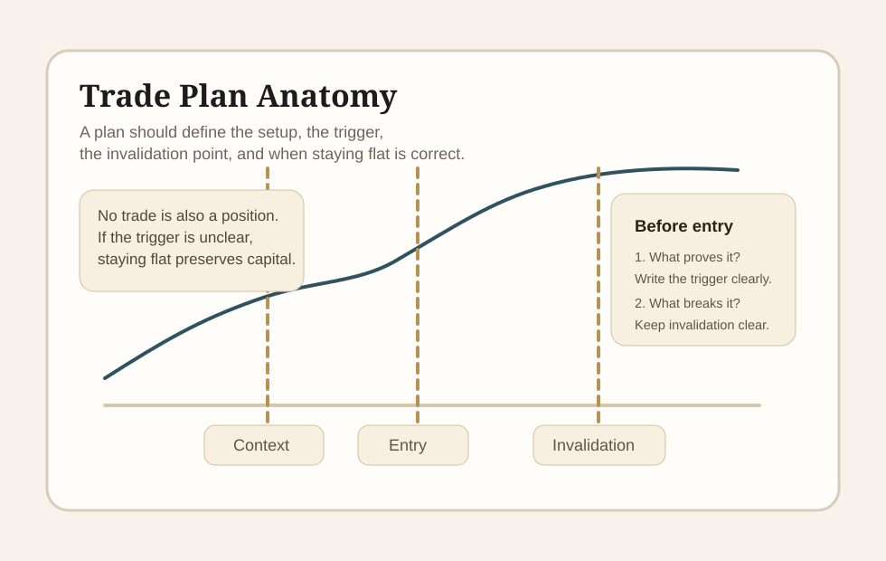
A basic plan should define why the trade matters, how it becomes active, and what invalidates it.
Three beginner playbooks
A new trader does not need twenty setups. Three are enough to begin learning process. The first is a breakout continuation playbook: price compresses near an important level, expands through it with confirmation, and offers a trade only if the trader can define where the move clearly fails. The second is a pullback playbook: a trending market pauses or retraces into a known area, then shows evidence of resuming. The third is a range-reaction playbook: price rotates between two zones and the trade idea depends on rejection near one edge or acceptance through it.
The point of naming these playbooks is not to make them automatic winners. It is to reduce randomness. A beginner who knows which playbook is being attempted can compare one trade to another and eventually ask whether a certain environment or execution style is helping or hurting performance.
This is also the stage where a trader should start recording what a setup is not. A breakout playbook should include the conditions that cancel it. A pullback playbook should include the signs that the trend may be weakening rather than merely pausing. The more explicitly the playbook defines when not to trade, the more useful it becomes.
- Breakout playbook: best when the market is orderly and the level matters.
- Pullback playbook: best when trend structure is clear and invalidation is nearby.
- Range-reaction playbook: best when the market is actually rotating rather than pretending to trend.
Selection rule: If the setup does not fit one of your defined playbooks, the safest default is to pass.
The decision to do nothing
Standing aside is not inactivity. It is risk control. A beginner can ruin a solid week by forcing one trade in a poor environment simply because being flat feels unproductive. That impulse is expensive. The market offers endless opportunities over time, but it does not owe any trader an immediate one.
Good reasons to do nothing include unclear structure, event risk that cannot be priced confidently, weak liquidity, fatigue, revenge-trading behavior, or the absence of a clean invalidation point. Passing in those circumstances is evidence of discipline, not timidity.
The professional-looking version of patience is selectivity. The amateur-looking version of confidence is overactivity. A beginner should learn to tell those apart very early.
Risk-reward is a filter, not a promise
Beginners are often taught to look for a certain reward-to-risk ratio as if that number alone can rescue a weak trade. It cannot. A favorable ratio is only meaningful if the entry is realistic, the invalidation is honest, and the target has some relationship to the actual structure. A trade with a beautiful spreadsheet ratio but a fantasy target is still a low-quality trade.
This is why reward-to-risk should be used as a filter after the plan exists, not as a substitute for building the plan. Start with context, trigger, and invalidation. Then ask whether the likely path of the trade offers enough room relative to the risk being taken. If the answer is no, the trade may still be interesting, but it is not well priced.
The emotional benefit of this approach is that it reduces attachment. The trader is no longer trying to force every chart into a tradable ratio. Instead, the market must meet a standard before capital is committed. That mindset looks slower, but it is often the difference between professional selectivity and amateur urgency.
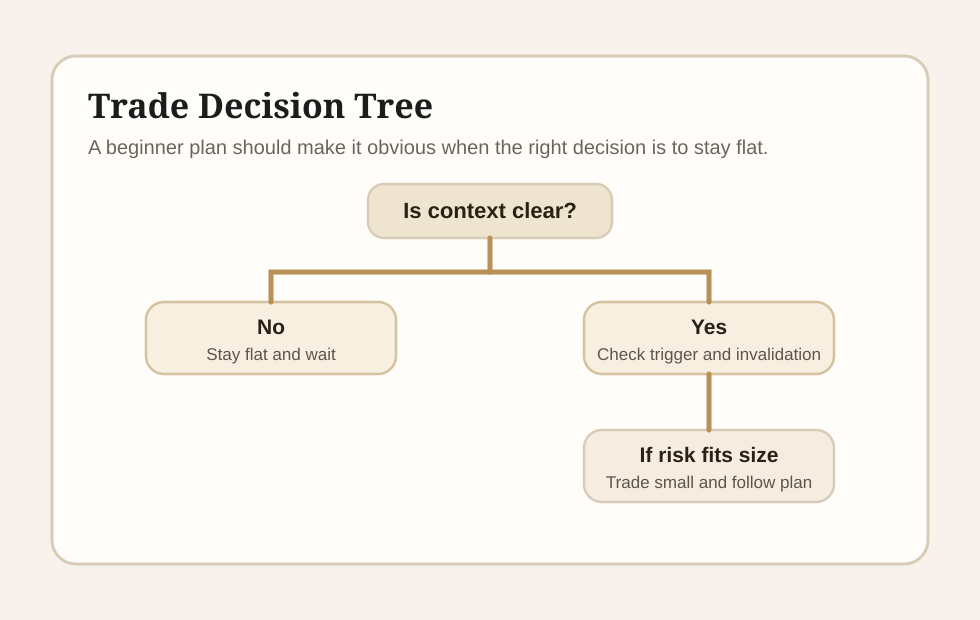
The best beginner plan makes it easy to reject weak trades before capital is committed.
Chapter checklist
- Every trade idea I take can be explained using context, trigger, invalidation, and target.
- I am working from a small list of named playbooks instead of improvising everything.
- I treat no-trade decisions as valid outcomes, not as failures.
- My invalidation level is based on market logic, not just discomfort.
Review questions
- What role does each of the four trade-plan pieces play?
- Why is a small playbook library better than unlimited improvisation for a beginner?
- Which conditions should push a trader toward staying flat?
Common mistakes
- Starting from entry desire instead of starting from context and invalidation.
- Using a trigger too vague to verify in real time.
- Treating boredom as a valid reason to trade.
Scenario lab
A trader wants to join a fast move immediately. There is no written trigger, the stop would be based on discomfort, and the target is being imagined rather than planned. The need to participate is stronger than the quality of the plan.
- Which part of the trade plan is missing or weak?
- What would make this trade actionable rather than exciting?
- At what point does doing nothing become the correct decision?
Verification checklist
- Keep example setups labeled as examples rather than recommendations.
- Explain where a playbook is invalid as clearly as where it might work.
- Avoid presenting selective patience as indecision in public copy.
Worksheet prompts
- Write one breakout plan using context, trigger, invalidation, and target.
- Write one pullback plan using the same structure.
- Describe a recent situation where staying flat would have been the best decision.
Primary sources
Chapter 7
Position Sizing, Margin, and Survival
Most beginners do not fail because they never had a good idea; they fail because size outran skill.
Objectives
- Size positions from risk first, not from excitement.
- Create loss limits that protect the account during weak periods.
- Understand how leverage and margin can magnify damage.
Key terms
position sizing, R-multiple, margin call, maintenance margin, drawdown, leverage
Size from dollar risk, not from conviction
A small account does not become a professional account by using professional-sounding language. It becomes more fragile if the trader uses oversized positions relative to the stop distance and the actual ability to absorb loss. A cleaner beginner method is to decide in advance how much money may be lost if the trade is wrong, then work backward into size.
That simple habit immediately changes behavior. Wider stops demand smaller size. Fast or volatile instruments demand more caution. Thin markets justify even less size. The trader stops asking, 'How much can I make if this runs?' and starts asking, 'What is the damage if I am wrong immediately?' That shift is one of the most important psychological upgrades a beginner can make.
Once sizing is tied to risk, the trade can be evaluated more rationally. The trader is not forced into all-or-nothing decisions because the initial risk was never allowed to become absurd.
The same principle works across products. A stock trade with a wide technical stop, a crypto trade in a fast market, and an ETF trade in a calmer environment may all require different share or coin amounts even when the trader's dollar-risk limit stays constant. The account becomes steadier when product differences change size rather than changing discipline.
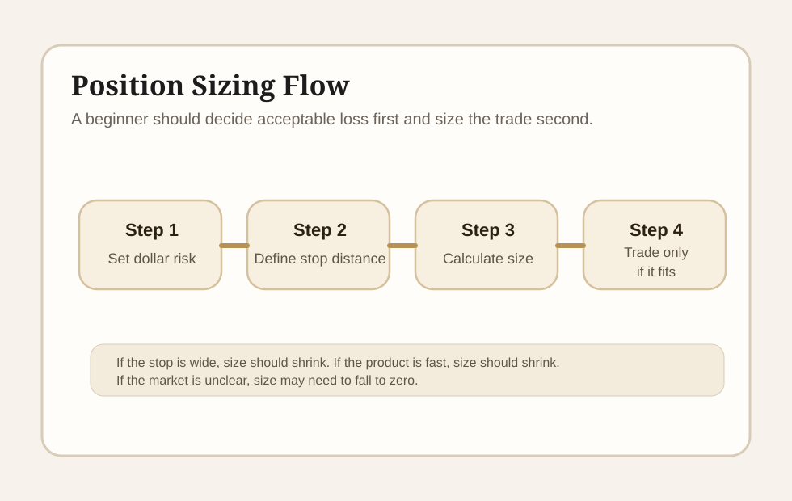
Size should be the consequence of dollar risk and stop distance, not the starting impulse.
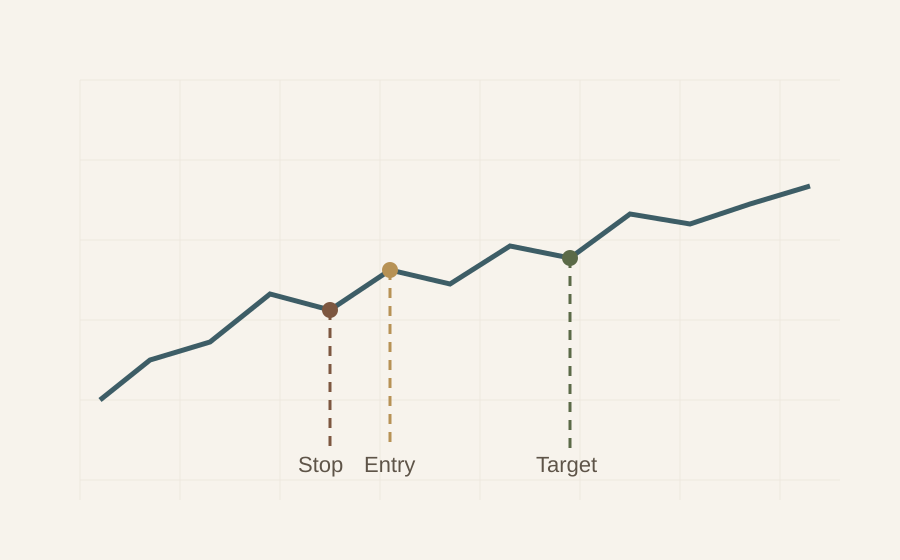
Risk should be defined before the order is entered, not after the position becomes stressful.
Daily loss limits and drawdown control
I want beginners to have rules for bad periods, not just for ideal setups. A daily loss limit, a weekly stop point, and a rule for cutting size after a drawdown can prevent a normal rough patch from turning into a destructive spiral. These rules are not proof of weakness. They are proof that the trader understands variance.
A common pattern is this: a trader takes a normal loss, increases size to 'make it back,' enters a lower-quality setup, and compounds the damage emotionally. A daily stop interrupts that sequence. It replaces improvisation with a mechanical boundary. That boundary is especially valuable when the trader is new enough that emotional resilience has not yet been tested thoroughly.
A useful add-on rule is to slow the account after a streak of poor behavior, not just after poor outcomes. If the problem was oversized risk, revenge entries, or impulsive clicking, the answer is not only to stop for the day. It is to reduce size on the next session until clean behavior returns. Recovery should be earned through process quality, not demanded from the market.
- Set a maximum daily loss that forces a stop to active trading for the session.
- Reduce size after a defined drawdown instead of increasing it.
- Treat revenge trading as a process failure, not as a personality quirk.
Margin and leverage change the meaning of a mistake
Investor.gov warns that margin accounts can be very risky. A customer can lose more money than initially invested, may need to deposit additional funds quickly, and may have positions liquidated without advance approval. Those are not side details. They are core product characteristics.
CME Group's beginner education makes the same point from the futures side: margin allows a trader to control a much larger notional value with a smaller amount of cash, which magnifies both gains and losses. In other words, leverage does not create opportunity without also sharpening the penalty for error.
That is why leverage should be treated as an amplifier, not as a shortcut. If the underlying decision process is weak, leverage makes weakness more expensive. If execution discipline is unstable, leverage makes instability more dangerous. The beginner who assumes leverage is necessary to make progress is usually confusing speed with skill.
Crypto and futures markets make this lesson especially visible because liquidation pressure can become part of the price action itself. The trader is not only managing an individual position. The trader is operating in an environment where other leveraged positions may be forced out violently. That is another reason smaller size is not merely conservative language. It is a structural survival tool.
Leverage rule: If a small move against the trade would force panic, the position is too large even if the platform technically allows it.
The clean beginner posture is to treat leverage as optional until process quality is boringly consistent. If paper trading, micro size, or spot exposure already feels difficult to manage with discipline, more leverage will not solve the problem. It will only increase the cost of pretending the problem is solved.
Chapter checklist
- I size from acceptable dollar risk rather than from hope.
- I have a daily loss limit and a drawdown response rule.
- I know the margin and liquidation rules that apply to my product.
- I understand that leverage magnifies bad behavior as efficiently as it magnifies good ideas.
Review questions
- Why is stop distance inseparable from position size?
- What problem does a daily loss limit solve?
- How does leverage change the consequences of ordinary mistakes?
Common mistakes
- Choosing size first and looking for a stop that justifies it later.
- Increasing size after losses to recover quickly.
- Treating platform-allowed leverage as prudent leverage.
Scenario lab
After two small losses, a trader doubles size on the next setup because the idea feels stronger and a recovery feels necessary. The stop remains wide, the market remains fast, and the emotional need for recovery is now inside the position.
- Which process rule failed first?
- How should size, stop distance, and daily loss limits interact here?
- What smaller and more professional response would interrupt the spiral?
Verification checklist
- Re-check leverage and margin examples against current official docs where relevant.
- Do not imply that formulas remove uncertainty; they only frame it better.
- Update any product-specific examples when contract specs or policies change.
Worksheet prompts
- Write down your daily stop rule and your drawdown-size reduction rule.
- Describe how you would calculate size from stop distance in plain language.
- List the specific risks that come with a margin account or leveraged product.
Primary sources
Chapter 8
Journaling, Review, and Fraud Defense
A trading practice matures when it can be reviewed honestly and defended operationally.
Objectives
- Build a journal that records both trade data and decision quality.
- Use review to improve rules rather than to retell the market story.
- Recognize common fraud patterns and guaranteed-return pitches.
Key terms
journal, review loop, fraud red flag, guaranteed return, verification, process tag
What belongs in a useful trading journal
A journal is not a diary of feelings alone and it is not only a spreadsheet of price and time. A useful journal captures the plan before entry, the execution details, the management decisions, the result, and the review judgment afterward. Without those layers, a trader may know what happened but never understand why it happened.
At minimum, a beginner journal should record the market, the setup name, the time frame context, the entry, the stop or invalidation level, the target logic, size, screenshots, and a short note about whether the trade followed the rules. Over time, tags become powerful. A trader might discover that certain mistakes cluster around thin markets, low sleep, late-session trades, or oversized attempts to recover losses.
The purpose of a journal is not self-punishment. It is pattern recognition. It turns vague memory into inspectable evidence.
Screenshots matter here because memory edits itself quickly. A before-entry image, an exit image, and one sentence about what the trader believed at the time can reveal whether the trade was actually taken according to plan or was rationalized after the fact. Over time, that record becomes one of the fastest ways to separate real edge from self-flattering storytelling.
Review should change future behavior
A weekly review should answer a few plain questions. Which setups were taken? Which followed the plan? Which mistakes repeated? What should be changed, reduced, or removed next week? If the review does not produce behavior change, it is only record storage.
This is where the beginner can start separating outcome quality from process quality. A good trade can lose. A bad trade can win. Review should therefore score whether the execution matched the plan before it scores whether the market rewarded the result.
The small trader does not need complex analytics immediately. Consistent review of a few repeated questions can already be transformative if it is done honestly and linked to rule changes.
A good review loop is concrete. It should end with one or two changes small enough to apply next week, such as skipping low-liquidity periods, reducing size after the first loss, or refusing all trades that lack a written invalidation level. If the review produces ten ambitious promises, it usually changes nothing. If it produces one enforceable rule, it can materially improve the next month.
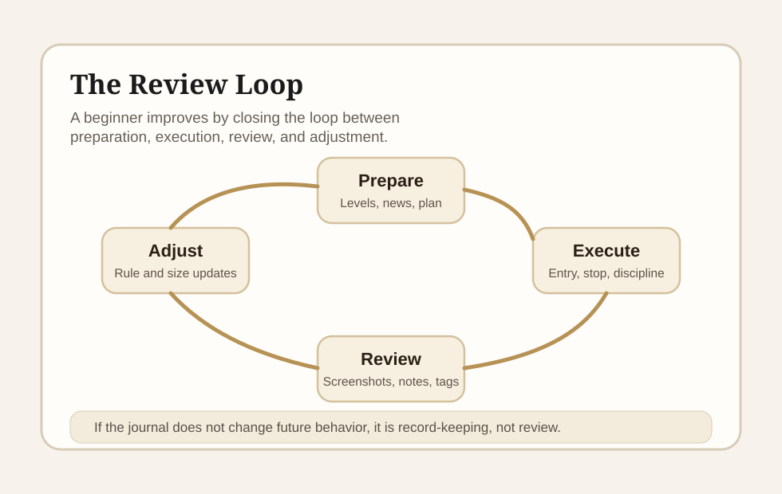
The review loop should move from evidence to rule changes, not from emotion to excuses.
Fraud defense belongs inside a beginner trading book
Fraud and poor process often meet in the same place: urgency, opacity, and unrealistic promises. The SEC and CFTC have warned about digital-asset and crypto trading websites that advertise high guaranteed returns with little or no risk. The language can sound sophisticated while the core offer remains absurd.
CFTC advisories also emphasize that government officials do not ask people to send money, digital assets, or fees to recover losses. FINRA, CFTC, and NFA-related impersonation scams target the same emotional weakness that poor trading decisions target: the desire for certainty without process.
I want you to treat every guaranteed-return pitch as presumptively false, every unsolicited recovery offer as hostile until verified, and every request for wallet credentials or urgent payment as a potential theft attempt. The more mysterious the strategy and the more certain the result, the greater the reason to step back.
Crypto-related fraud risk makes this even more important because scammers often copy the visual language of real exchanges, wallets, or influencers. They may promise guaranteed returns, early access, insider allocation, or recovery of prior losses if one more payment is sent. Those pitches should be treated as red alerts. Legitimate market participation still involves uncertainty, paperwork, and verification. Scam language tries to replace that with certainty, urgency, and performance.
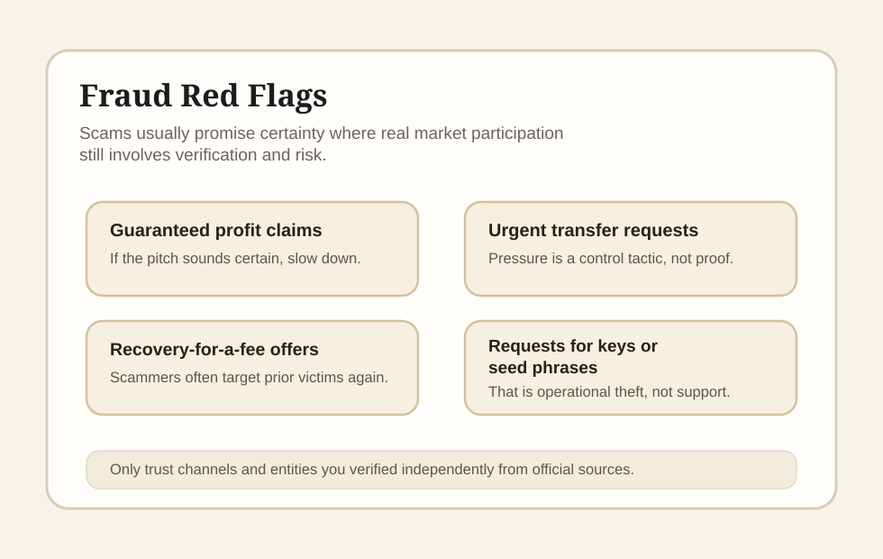
Fraud red flags usually point to urgency, certainty, secrecy, or direct requests for access.
- Guaranteed returns are a fraud red flag.
- Unsolicited offers to recover losses for a fee are a fraud red flag.
- Pressure to move funds quickly is a fraud red flag.
- Requests for private keys, seed phrases, or odd payment methods should be treated as hostile.
Defensive standard: Only trade or communicate through channels you have independently verified from official sources.
Chapter checklist
- My journal captures plan quality, execution quality, and result quality.
- My weekly review leads to specific behavior changes or rule changes.
- I know the main fraud red flags tied to guaranteed-return and recovery scams.
- I verify channels and entities independently before sending funds or information.
Review questions
- Why is a journal more useful when it captures rule-following, not just price data?
- How can a review separate good process from short-term outcome?
- Which promises or behaviors should immediately raise fraud concerns?
Common mistakes
- Logging entries and exits but not the reason the trade existed.
- Reviewing outcomes while ignoring whether rules were followed.
- Treating urgency and guaranteed returns as proof of sophistication.
Scenario lab
A trader receives a message promising near-certain returns and a quick recovery plan for prior losses. Screenshots are impressive, urgency is high, and the legal entity behind the offer remains vague.
- Which parts of the pitch are immediate red flags?
- What independent verification steps would happen before any response or payment?
- How does a disciplined review process make this kind of pitch easier to reject?
Verification checklist
- Re-check scam-warning links before public release because advisories can move.
- Keep fraud examples generic unless every claim is independently verified.
- Do not imply that vigilance removes all risk; the cleaner claim is that it reduces preventable exposure.
Worksheet prompts
- List the exact fields you want in your trade journal.
- Write the three review questions you will ask yourself every week.
- List the fraud red flags that would cause you to stop communication immediately.
Primary sources
Publication Note
End of full edition
This edition is the long-form beginner manual for the Madeesh P. Nissanka educational library and is intended to read like a durable operating guide rather than a short web article.
Educational only. Not financial advice.
Madeesh P. Nissanka